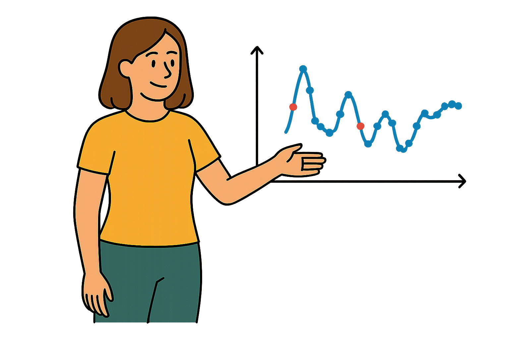

This dashboard shows daily glucose levels recorded by continuous monitors. Each blue dot represents a glucose reading at a specific time, while red dots indicate readings recorded shortly after a meal.
Hover over any point to view the exact time and glucose value. You can also zoom in by selecting a time range on the chart, and reset at any time.
Look closely at the red dots. What happens to glucose levels after meals? Do they always rise? Are the patterns the same for every meal—or every person?
This tool is designed to help you explore those patterns. Try switching between different people and days. See if you can spot trends in how glucose behaves after breakfast, lunch, or dinner.
